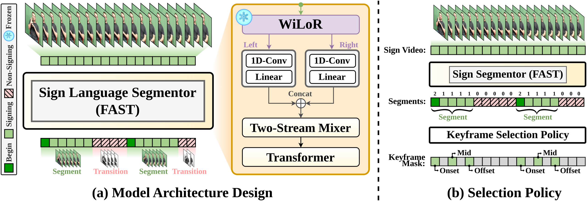
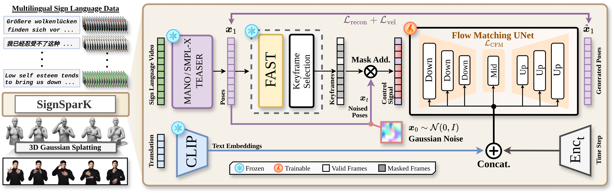

Fig. 1 — SignSparK generates fluent, multilingual 3D signing from text via sparse keyframe control.
1CVSSP, University of Surrey, United Kingdom
Sign Language Production (SLP) faces a fundamental trade-off: direct text-to-pose models suffer from regression-to-the-mean effects, while dictionary-retrieval methods produce disjointed transitions. To resolve this, we propose a novel training paradigm that leverages sparse keyframes to capture the underlying kinematic distribution of human signing. By generating dense motion from discrete anchors, our approach mitigates regression-to-the-mean while ensuring fluid articulation. To achieve this at scale, we introduce FAST, an ultra-efficient sign segmentation model that automatically mines precise temporal boundaries. We then present SignSparK, a Conditional Flow Matching (CFM) framework that utilizes these temporal anchors to synthesize 3D signing sequences. This keyframe-driven formulation also unlocks Keyframe-to-Pose (KF2P) generation, making precise spatiotemporal editing of signing sequences possible. Furthermore, SignSparK scales across four distinct sign languages, constituting the largest multilingual SLP framework to date, and integrates 3D Gaussian Splatting for photorealistic rendering. Extensive evaluations demonstrate that SignSparK achieves state-of-the-art across diverse SLP tasks and multilingual benchmarks.

Fig. 2 — (a) FAST model architecture: frozen WiLoR hand features pass through parallel 1D-Conv streams, a Two-Stream Mixer, and a Transformer to predict per-frame BIO tags. (b) Keyframe selection policy extracting onset → mid → offset per sign segment.

Fig. 3 — SignSparK framework: 3D feature extraction → FAST keyframe selection → CFM synthesis → 3DGS rendering.
| Method | How2Sign | CSLDaily | Phoenix-2014T | |||||||||
|---|---|---|---|---|---|---|---|---|---|---|---|---|
| DTW-PA-JPE ↓ | DTW-JPE ↓ | DTW-PA-JPE ↓ | DTW-JPE ↓ | DTW-PA-JPE ↓ | DTW-JPE ↓ | |||||||
| Body | Hand | Body | Hand | Body | Hand | Body | Hand | Body | Hand | Body | Hand | |
| Gloss-Free Text-to-Pose (GF-T2P) | ||||||||||||
| Prog. Trans. | 14.15 | 11.57 | 14.74 | 30.17 | 15.98 | 12.91 | 16.30 | 32.63 | 13.67 | 11.95 | 15.01 | 31.77 |
| Text2Mesh | 13.99 | 13.47 | 15.50 | 32.97 | 13.47 | 12.10 | 13.76 | 30.37 | 13.48 | 12.06 | 14.04 | 31.64 |
| T2S-GPT | 11.48 | 6.39 | 12.65 | 18.44 | 11.94 | 5.93 | 12.32 | 15.43 | 10.38 | 6.47 | 11.65 | 19.09 |
| S-MotionGPT | 11.23 | 4.39 | 12.41 | 13.74 | 10.81 | 3.78 | 11.58 | 11.31 | 9.45 | 3.41 | 10.42 | 9.08 |
| SOKE (no dict.) | 7.91 | 3.10 | — | — | 7.58 | 2.17 | — | — | 6.16 | 1.85 | — | — |
| SignSparK (no KF) | 7.26 | 2.72 | 6.30 | 11.43 | 7.26 | 2.00 | 6.27 | 10.63 | 5.24 | 1.52 | 4.40 | 7.10 |
| Sign Retrieval Text-to-Pose (SR-T2P) | ||||||||||||
| SOKE | 6.82 | 2.35 | 7.75 | 10.08 | 6.24 | 1.71 | 7.38 | 9.68 | 4.77 | 1.38 | 6.04 | 7.72 |
| SignSparK | — | — | — | — | 4.87 | 1.37 | 4.89 | 6.56 | 3.68 | 1.18 | 3.51 | 4.82 |
SignSparK consistently reduces body and hand Joint Position Error (JPE) across all datasets in both GF and SR regimes.
| Method | How2Sign | CSLDaily | Phoenix-2014T | ||||||||||||
|---|---|---|---|---|---|---|---|---|---|---|---|---|---|---|---|
| DTW-PA-J ↓ | DTW-J ↓ | B-T ↑ | Drop ↓ | DTW-PA-J ↓ | DTW-J ↓ | B-T ↑ | Drop ↓ | DTW-PA-J ↓ | DTW-J ↓ | B-T ↑ | Drop ↓ | |||||||
| Body | Hand | Body | Hand | BLEU-4 | Body | Hand | Body | Hand | BLEU-4 | Body | Hand | Body | Hand | BLEU-4 | |
| GT | 0.00 | 0.00 | 0.00 | 0.00 | 3.37 | 0.00 | 0.00 | 0.00 | 0.00 | 6.83 | 0.00 | 0.00 | 0.00 | 0.00 | 14.77 |
| SLERP Baseline | 4.18 | 0.98 | 4.36 | 3.76 | 2.78 ↓18% | 4.39 | 0.85 | 4.05 | 4.35 | 4.88 ↓29% | 4.10 | 0.89 | 3.71 | 4.12 | 9.18 ↓38% |
| SignSparK | 2.11 | 0.86 | 1.68 | 2.80 | 2.99 ↓11% | 2.50 | 0.63 | 2.02 | 2.71 | 5.85 ↓14% | 2.39 | 0.71 | 1.92 | 2.25 | 11.70 ↓21% |
SignSparK outperforms SLERP interpolation on all metrics, with significantly smaller performance drops relative to GT.
This work was supported by EPSRC grant APP24554 (SignGPT — EP/Z535370/1), EPSRC grant APP78083 (UMCS — UKRI3927), and through funding from Google.org via the AI for Global Goals scheme. The authors acknowledge the use of Isambard-AI National AI Research Resource (AIRR), funded by UK DSIT via UKRI and STFC [ST/AIRR/I-A-I/1023]. Jianhe Low additionally acknowledges a bursary from the Rabin Ezra Scholarship Trust. This work reflects only the authors' views; the funders are not responsible for any use that may be made of the information it contains.
@inproceedings{signspark2026,
title = {SignSparK: Efficient Multilingual Sign Language
Production via Sparse Keyframe Learning},
author = {Low, Jianhe and Symeonidis-Herzig, Alexandre and
Ivashechkin, Maksym and Mercanoglu Sincan, Ozge and
Bowden, Richard},
booktitle = {European Conference on Computer Vision (ECCV)},
year = {2026},
}